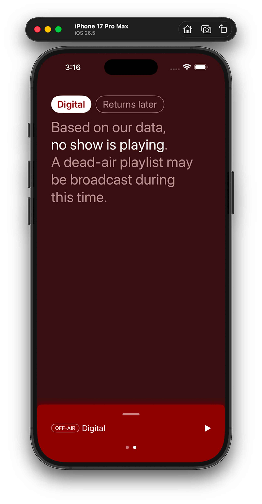
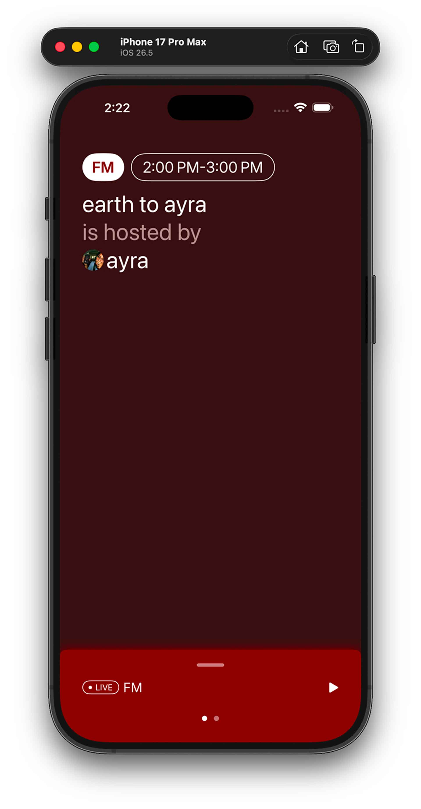
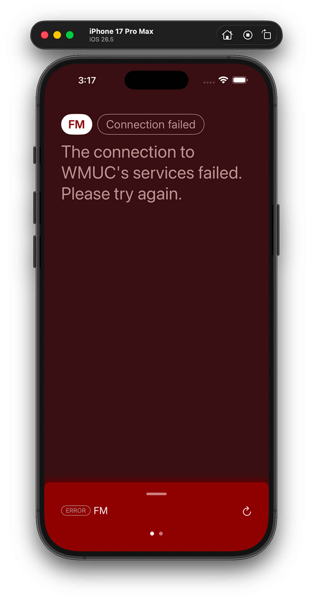
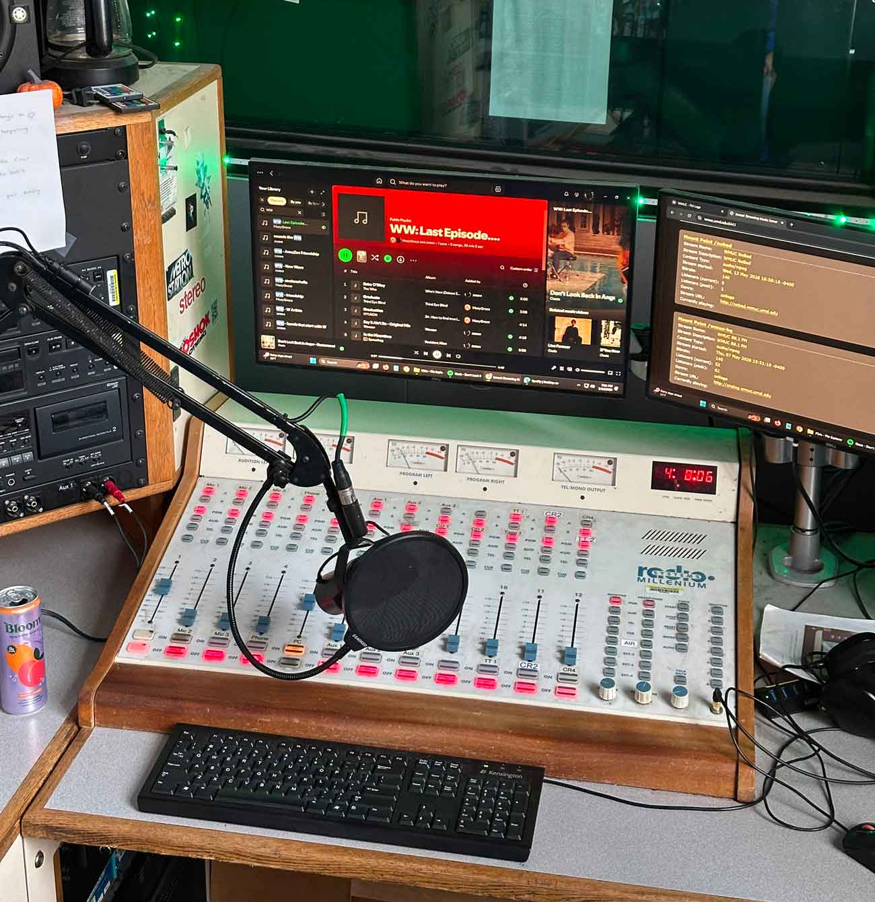
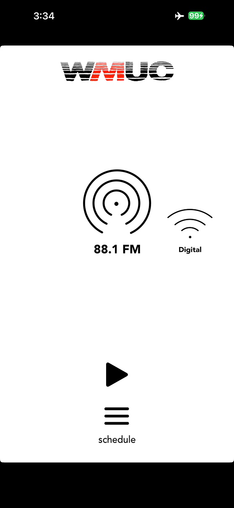
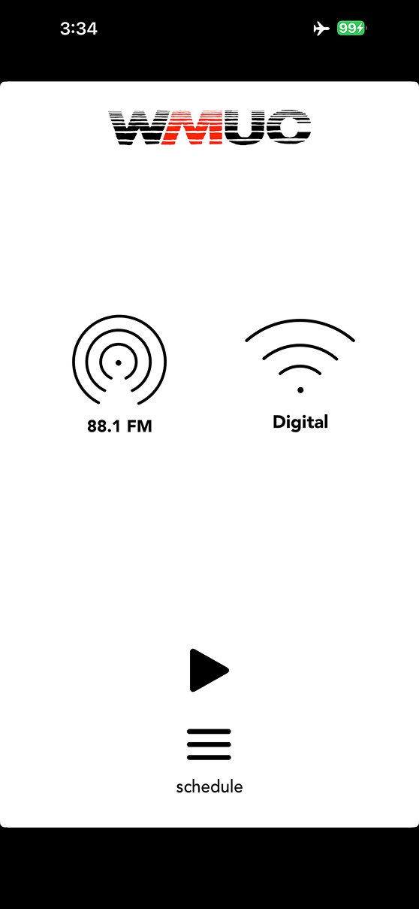

WMUC Radio



ROLE
iOS App Manager
TIMELINE
Sept 2025 - Sept 2026
TEAM
1 Assistant
2 Supervisors
SKILLS
Figma
Xcode
Swift
UIKit/SwiftUI
BACKGROUND
WMUC is the University of Maryland’s official campus radio station. It maintains a significant physical presence on the university, has hosted notable artists (like Mitski) on its long-running flagship FM show, and has one of the largest physical libraries of any college radio station in America.

PROBLEM
A new app prioritizing maintainability and longetivity
Users heavily relied on the station’s 2017 UIKit-based app to listen to radio shows. When the station modernized its API endpoints, we declared the old app unsalvageable after spending months wrangling with its messy code. How could we design and engineer an app to thrive for as long as possible when I may not have a successor for years on end?


THE ORIGINAL 2017 IOS APP.
RESEARCH
Working around unusual constraints
The station is volunteer-run and only undergraduate students can be staff members. As a result, the new app has to overcome operational shortcomings that heavily impact the user experience.
Low-accuracy data
The server isn’t informed of unexpected show cancellations, host substitutions, school closures, and holidays.
Inconsistent show information
Show descriptions, cover photos, and host profile photos are optional and up to the hosts’ discretion to upload.
Site & branding change frequently
The station’s branding and website have been overhauled multiple times since 2017...including social media.
App might sit untouched for years
Nobody touched the 2017 app for five years. It’s possible and likely that the new app will face the same fate.
Inexperienced successors
The UI should foster an intuitive codebase if my successor has little experience with Swift or engineering.
APPROACH
Minimize confusion and rely only on what’s necessary
RELIABLE DATA ATTRIBUTES
We ranked the data attributes that are most likely to be accurate and only used the ones we felt were integral to the user experience.
ENGINEERING SIMPLICITY
Intentionally designing for good code
Because I had proficiency in Swift, UIKit, and SwiftUI, we consciously designed to ensure the subsequent implementation would be simple, maintainable, and well-supported by Apple.
DATA PARSING LOGIC
Data displayed to users uses minimal transformations from the API response, so the code can use single JSONDecoder line instead of extremely verbose key-value pair checks.
FINALLY...
Finishing the rest